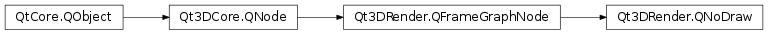

Qt3DRender.QNoDraw¶
Detailed Description¶
When a
Qt3DRender.QNoDrawnode is present in a FrameGraph branch, this prevents the renderer from rendering any primitive.
Qt3DRender.QNoDrawshould be used when the FrameGraph needs to set up some render states or clear some buffers without requiring any mesh to be drawn. It has the same effect as having aQt3DRender.QRenderPassFilterthat matches none of availableQt3DRender.QRenderPassinstances of the scene without the overhead cost of actually performing the filtering.When disabled, a
Qt3DRender.QNoDrawnode won’t prevent the scene from being rendered. Toggling the enabled property is therefore a way to make aQt3DRender.QNoDrawactive or inactive.
Qt3DRender.QNoDrawis usually used as a child of a Qt3DRendeR::QClearBuffers node to prevent from drawing the scene when there are multiple render passes.Qt3DRender::QViewport *viewport = new Qt3DRender::QViewport(); Qt3DRender::QCameraSelector *cameraSelector = new Qt3DRender::QCameraSelector(viewport); Qt3DRender::QClearBuffers *clearBuffers = new Qt3DRender::QClearBuffers(cameraSelector); clearBuffers->setBuffers(Qt3DRender::QClearBuffers::ColorDepthBuffer); Qt3DRender::QNoDraw *noDraw = new Qt3DRender::QNoDraw(clearBuffers); Qt3DRender::QRenderPassFilter *mainPass = new Qt3DRender::QRenderPassFilter(cameraSelector); .... Qt3DRender::QRenderPassFilter *previewPass = new Qt3DRender::QRenderPassFilter(cameraSelector); ....
-
class
PySide2.Qt3DRender.Qt3DRender.QNoDraw([parent=nullptr])¶ Parameters: parent – PySide2.Qt3DCore.Qt3DCore::QNodeThe constructor creates an instance with the specified
parent.
© 2018 The Qt Company Ltd. Documentation contributions included herein are the copyrights of their respective owners. The documentation provided herein is licensed under the terms of the GNU Free Documentation License version 1.3 as published by the Free Software Foundation. Qt and respective logos are trademarks of The Qt Company Ltd. in Finland and/or other countries worldwide. All other trademarks are property of their respective owners.